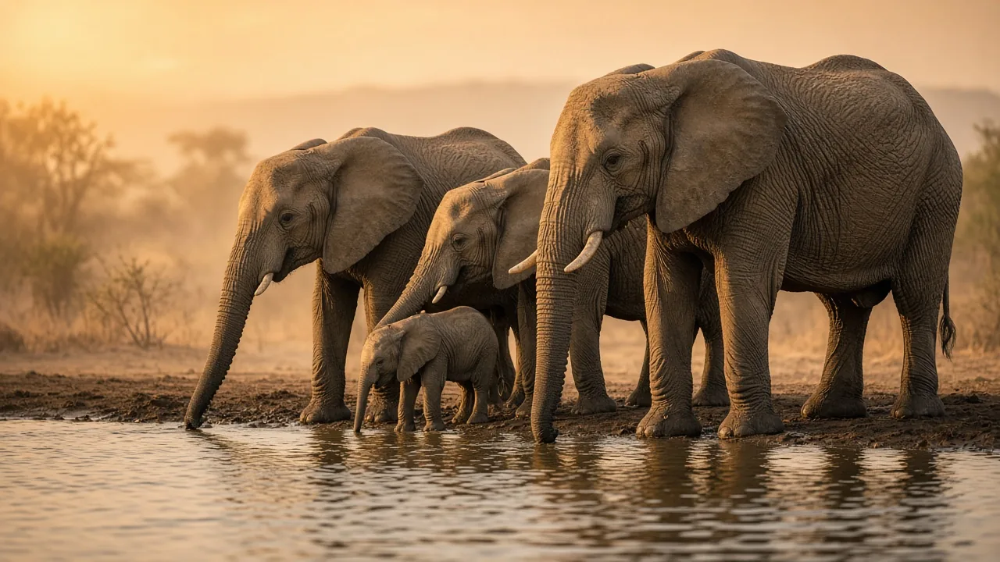

Can elephants swim?
Yes. Elephants are surprisingly good swimmers. They float easily, paddle with all four legs and breathe through the tip of the trunk held above the surface, like a snorkel. Their lungs are built differently from those of any other mammal in a way that may make that snorkelling possible, and some scientists think it is a clue that elephants' distant ancestors spent much of their time in water.

The short answer
Elephants can swim, and they are better at it than their size suggests. An adult elephant floats with most of its body under water, paddles with all four legs and keeps breathing by holding the tip of its trunk above the surface. Elephants regularly cross deep rivers and lakes this way, and Asian elephants have been seen swimming between islands in the sea. Rather than sinking under their weight, they are helped by the large volume of air in their lungs and by a trunk that works as a built-in snorkel.
How an elephant swims
A swimming elephant moves its legs in a walking or paddling rhythm, much as it does on land, and the body rises and falls gently as it goes. Often only the top of the head, the back and the raised trunk are visible. Herds cross rivers together, with adults staying close to calves, and elephants also simply enjoy water: bathing, rolling and splashing help them cool off and care for their skin, alongside the mud and dust baths described in why elephants throw mud and dust on themselves.
The trunk is the key. Made of thousands of muscle bundles and no bone (see how many muscles are in an elephant's trunk), it can be lifted high and curled, so an elephant can keep breathing even when its head is fully submerged. No other living mammal can snorkel with its body this far below the surface.
Lungs built for snorkelling
In most mammals, including humans, each lung sits inside a thin, fluid-filled gap called the pleural space, which lets it slide against the chest wall as we breathe. Elephants are different. Their lungs are attached directly to the chest wall and diaphragm by dense connective tissue, so there is no pleural space at all. They are the only mammals known to have this arrangement as adults.
In 2001 the respiratory physiologist John West proposed an explanation. When an elephant snorkels, its chest is under water while it breathes air at surface pressure through the trunk. West calculated that at a depth of about two metres, the pressure of the air inside the lungs would be roughly 150 mmHg below the pressure of the water pressing on the body. In a normal pleural space, that difference would be passed on to the small blood vessels of the pleura, which would be likely to burst and leak fluid. Replacing the space with tough connective tissue removes the weak point. West argued that this unique anatomy is best explained by snorkelling, and he discussed the idea again in a 2002 review asking why the elephant has no pleural space.
A clue to watery ancestors
Snorkelling may also hint at where elephants came from. Their closest living relatives are the sea cows, dugongs and manatees, which are fully aquatic. In a 1999 study, Ann Gaeth, Roger Short and Marilyn Renfree examined developing African elephant fetuses and reported several features that fit an aquatic past. The fetal kidneys had funnel-shaped structures called nephrostomes, which are typical of aquatic vertebrates and had never been reported in a mammal. The trunk appeared very early in development, and the testes stay inside the abdomen, as they do in many aquatic mammals. The authors suggested that the ancestors of elephants may have been aquatic or semi-aquatic. Not all scientists accept this, and fossils give a mixed picture, but the lungs, trunk and fetal features together make a striking case.
Calves, danger and the sea
Swimming does carry risks. Young calves can paddle but tire quickly, and in fast or flooded rivers they rely on their mothers and other herd members, who may nudge or support them with the trunk. Calves and even adults sometimes drown during floods. Elephants have also been carried out to sea: in July 2017 the Sri Lanka Navy rescued a young elephant found swimming about eight kilometres off the north-east coast and guided it back to shore. These rare events show both how buoyant and determined elephants are, and how even a strong swimmer can be overwhelmed by open water.
Size matters too. Because an elephant is so heavy (see how much an elephant weighs), it cannot run or jump, and its top speed on land is modest, as covered in how fast elephants can run. In water, though, its weight is supported, and long-distance crossings become possible.
The bottom line
Elephants swim well, paddling with all four legs and breathing through the trunk like a snorkel. Their lungs, fused to the chest wall with no pleural space, may have evolved to cope with the pressure of snorkelling, and features seen in elephant fetuses hint that their ancestors lived partly in water. For more on how elephant bodies work, see the elephant anatomy guide or the elephant FAQ.
Frequently asked questions
Can elephants swim?
Yes. Both African and Asian elephants swim well. They float with most of the body under water, paddle with all four legs and keep breathing through the trunk tip held above the surface.
How do elephants breathe when they swim?
An elephant uses its trunk as a snorkel. It raises the tip above the water and breathes through it while its head and body stay submerged. Elephants are the only mammals known to do this with the body well below the surface.
Why don't elephants' lungs collapse when they snorkel?
Elephants have no pleural space: their lungs are joined to the chest wall by dense connective tissue instead of sliding inside a fluid-filled cavity. Physiologist John West calculated that a snorkelling elephant faces a pressure difference of about 150 mmHg, enough to damage the delicate vessels of a normal pleura, so the unusual anatomy may protect it.
Did elephants evolve from water animals?
Some evidence suggests their ancestors were at least partly aquatic. Elephants are related to dugongs and manatees, and a 1999 study of elephant fetuses found kidney structures called nephrostomes, normally seen in aquatic vertebrates, plus a trunk that forms very early. The idea is debated but fits the snorkel anatomy.
Can baby elephants swim?
Calves can swim but tire quickly and depend on adults in deep or fast water. Mothers and other herd members often stay close, sometimes supporting a calf with the trunk or body, and calves have drowned when crossing flooded rivers.
Can elephants swim in the sea?
Yes. Asian elephants have been seen swimming between islands in India's Andaman Islands, and in 2017 the Sri Lanka Navy rescued an elephant that had been carried out to sea. Swimming in open sea is risky, though, and these animals can become exhausted.
Sources
- West, J. B. (2001). Snorkel breathing in the elephant explains the unique anatomy of its pleura. Respiration Physiology 126(1), 1 to 8. DOI 10.1016/S0034-5687(01)00203-1
- West, J. B. (2002). Why doesn't the elephant have a pleural space? News in Physiological Sciences (now Physiology) 17(2), 47 to 50. DOI 10.1152/nips.01374.2001
- Gaeth, A. P., Short, R. V. and Renfree, M. B. (1999). The developing renal, reproductive, and respiratory systems of the African elephant suggest an aquatic ancestry. Proceedings of the National Academy of Sciences 96(10), 5555 to 5558. DOI 10.1073/pnas.96.10.5555
Cite this page
APA
TuskWise. (2026, November 1). Can elephants swim? https://tuskwise.com/blog/can-elephants-swim.html
MLA
“Can elephants swim?” TuskWise, 1 Nov. 2026, tuskwise.com/blog/can-elephants-swim.html.
Chicago
TuskWise. “Can elephants swim?” TuskWise. Last modified November 1, 2026. https://tuskwise.com/blog/can-elephants-swim.html.